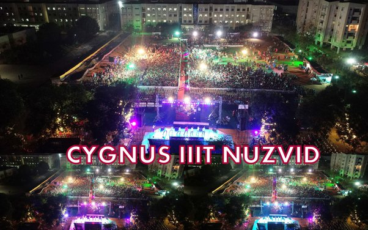
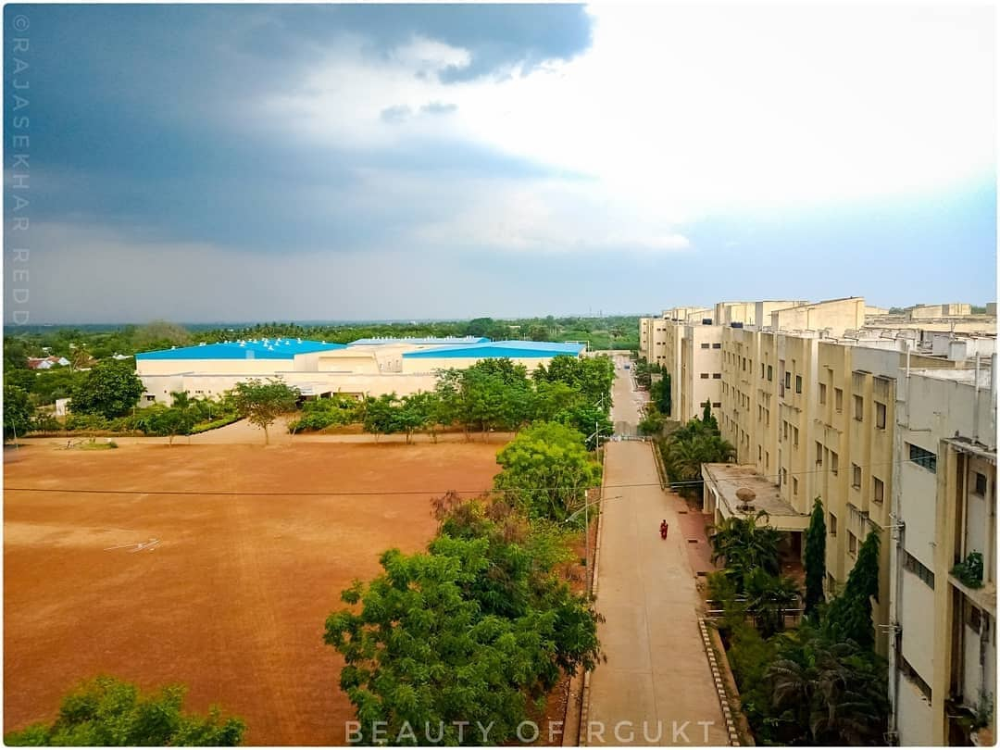
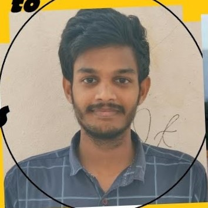
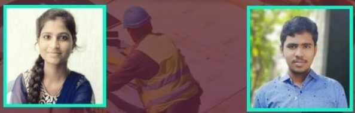
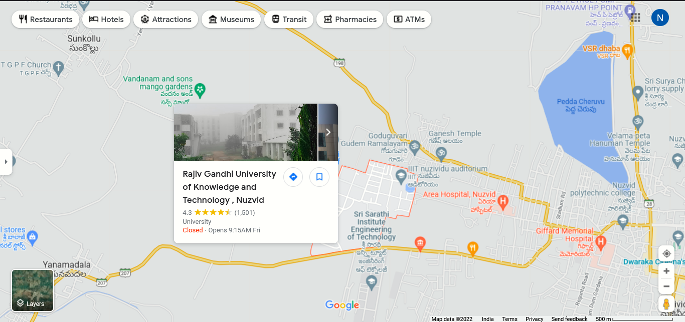

Our Facilities
In the university many facilities have....play ground library source food court Event practical labs
LIBRARY
Rgukt Nuzvid library
This library is very useful for students. all books available in this library.
ENTERTAINMENT
Rgukt Nuzvid Entertainment
This is available in all events enjoy all lot most memorable moments have in this campus
FOODCOURT

Rgukt foodcourt
This is available in all tyoes foods, idly,dosa,vada....etc. to have delicision food have in the foodcourt.
PRACTICAL LABORATORY

Rgukt all laboratory
To do all practical labs in that place to get more knowledge in that time.
PLAY GROUND
Rgukt play ground
This place is so practice the games.all games materials available in the place.
What Our Student Says
RGUKT conduct many events. That have many organizations have like,student mitra, helping hands etc......

Surya Narayana.K
He is one of hte top ranker in GATE EXAM. He is study as chemical branch. He is a good student in rgukt nuzvid.
Surya Narayana.K

ch.aditya p.sandhya
CIRICTURE is a one event.this is very difficult but this two members are winners. this two person are very lucky. we are got 4week internship. both are a good students in rgukt nuzvid.
ch.aditya p.sandhya
FOR REFERENCE VIDEO LINK:
CONTACT US
 MAYALAVARAM ROAD,RGUKT
NUZVID KRISHNA DISTRICT
+9127465748
IIITrgukt@gmail.com
© Created byvanaja